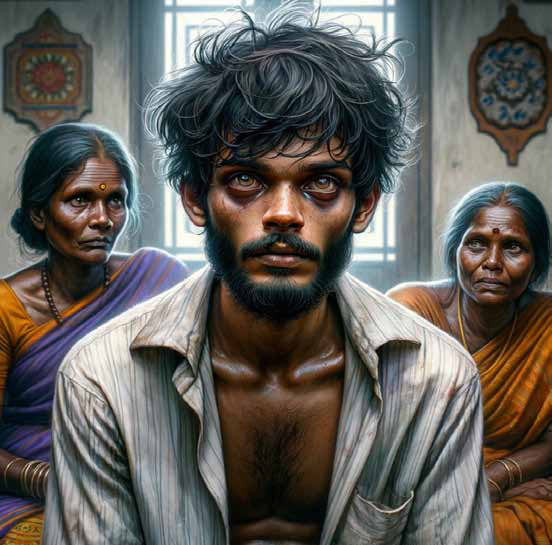
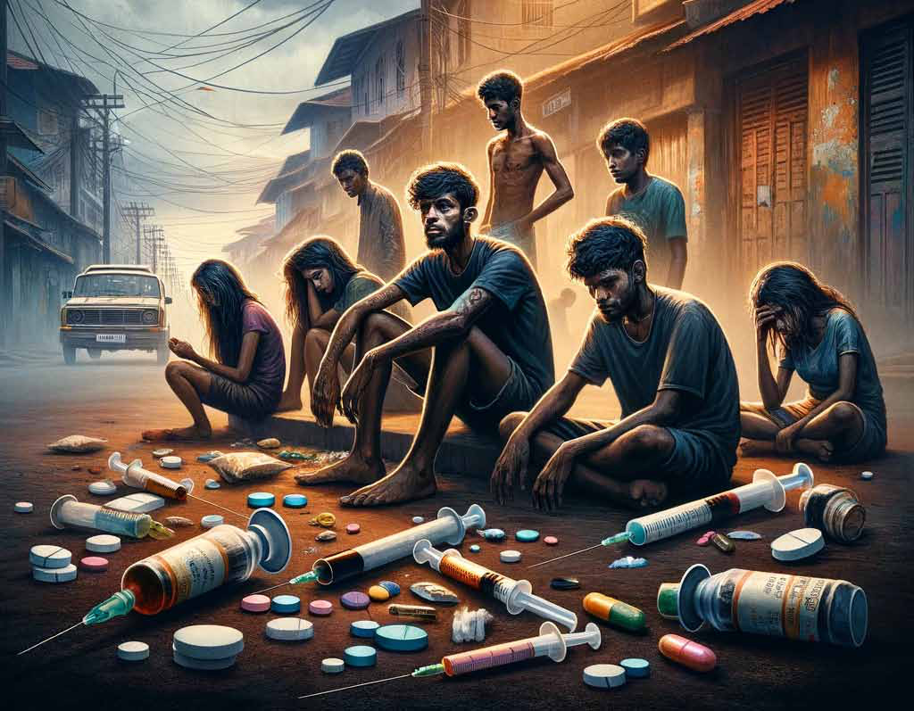
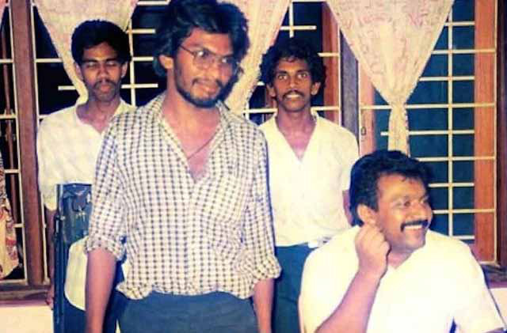
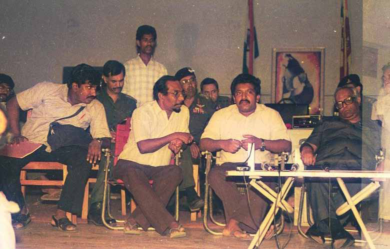
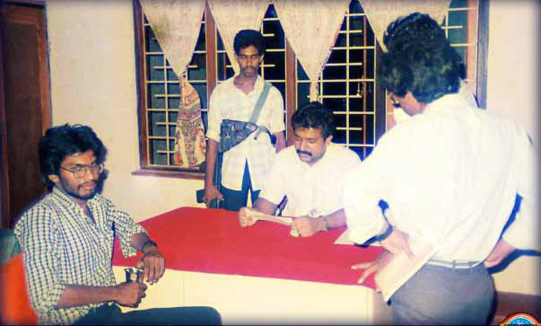
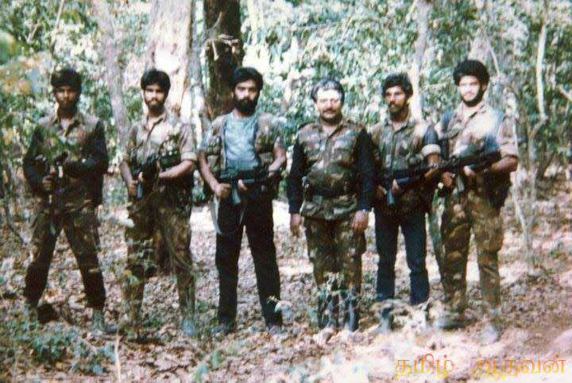
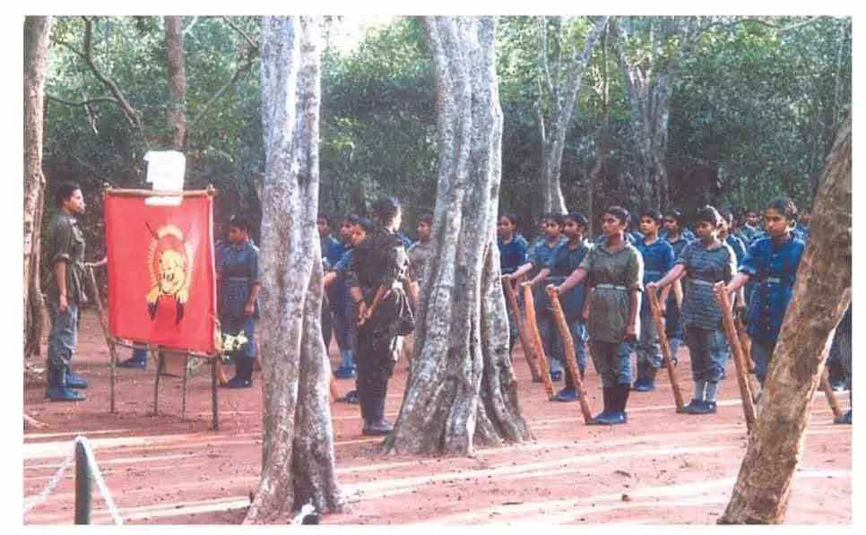
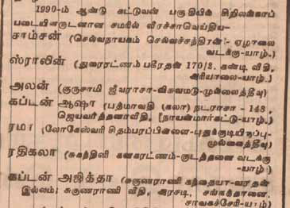
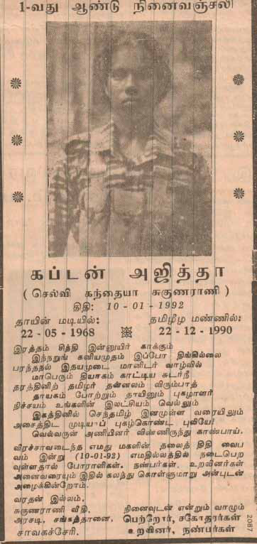

The Silent Epidemic Sweeping Through Sri Lanka
The Silent Epidemic Sweeping Through Sri Lanka
Jaffna Monitor hellojaffnamonitor@gmail.com 24 The Silent Epidemic Sweeping Through Sri Lanka I n a disturbing trend that has shaken the Northern Province of Sri Lanka, this year commenced with the tragic deaths of four young individuals, aged 20 to 30, linked to drug addiction. One poignant case was a young youth from Chavakachcheri who died during a drug party celebrating his release from prison, highlighting the unyielding grip of drug abuse in our society. Sri Lanka's geographical location in the Indian Ocean situates it on a major drug trafficking route. Narcotics from Afghanistan, BY: David Ignatius OPINION

Jaffna Monitor hellojaffnamonitor@gmail.com 25 Pakistan, and India are smuggled via the ocean, exploiting the challenges of policing vast maritime areas. This has transformed Sri Lanka into a pivotal hub in the global drug trade, posing severe challenges for law enforcement and public health. International maritime law allows nations to police waters within 12 nautical miles of their coastlines. Beyond this, the high seas become a haven for traffickers. In Sri Lanka, traffickers transport drugs near maritime boundaries, transferring them onto smaller boats to evade detection. This method, coupled with the use of fishing vessels, complicates the interception of these illegal cargoes. Adding to the complexity is the alleged involvement of influential figures in facilitating the drug trade. This metaphorical "guard eating the crop" scenario points to potential complicity within security forces, undermining efforts to combat drug trafficking. The 'Yukthiya' operation, Sri Lanka's significant crackdown on drug abuse, commenced on December 17 and spanned fifty days, leading to the arrest of over 100,000 individuals for drug-related offences. While highlighting the government's resolve, it also sparked debate over human rights implications. During 'Yukthiya', substantial drug seizures were reported, indicating the magnitude of the narcotics challenge. Most arrested individuals were cannabis users, predominantly males aged 25 to 29. The ethnic breakdown

Jaffna Monitor hellojaffnamonitor@gmail.com 26 showed 75.9% Sinhalese, 9% Tamil, and 7% Muslim, with the majority being labourers or unemployed. In the Northern and Eastern provinces, there's heightened concern over drug abuse, especially among the Tamil-speaking population. Critics suggest the prolonged military presence, initially a countermeasure against the LTTE, is now facilitating intensified nationalist measures disguised as anti-drug trafficking efforts. Despite significant drug-related arrests and seizures, the continuous discovery of unidentified boats and drug packages suggests persistent trafficking activities. Combating this scourge requires more than official measures. It demands the involvement of youth, families, and communities, alongside effective law enforcement and treatment programs. As a nation, we must tackle this challenge head-on, understanding that the solution lies not only in arrests and seizures but in addressing the underlying social and economic factors fueling this epidemic.
Jaffna Monitor
hellojaffnamonitor@gmail.com
27
Mahathaya's Saga:
Power, Paranoia, and Politics in the LTTE
BY:
Kaniyan Pungundran
fzpad; G+q;Fd;wd;
Part 05
Romance in the Rebel Ranks: Thiyagu and the
Female Fighter's Forbidden Love
It's worth noting an incident involving Kirupan, who was, in
fact, at the juncture of starting the RAW phobia within the
LTTE.
In 1987, during the Indian Army's siege of Jaffna, LTTE
leader Prabhakaran managed to escape to Niththikaikulam in
the Mulaitivu district. He crossed the Nayaru Bridge with a
highly trusted group of about 20 bodyguards. Accompanying
Prabhakaran were Sornam, Kirupan, Thiyagu, 'Pampu' Ajith,
Series
From left: Thiyagu, Thileepan, 'Pampu' Ajith, and Prabhakaran, September 14, 1987,
the day before Thileepan begins his historic hunger strike.

Jaffna Monitor hellojaffnamonitor@gmail.com 28 and a team of loyal bodyguards, all known for their unwavering loyalty. Thiyagu, originally named Kanthaiya Kirupakaran and hailing from Arasadi, Sangathanai, Chavakachcheri, is notable for being the first cousin of S. P. Tamilselvan, who later became the leader of the LTTE's political wing. Thiyagu's sister, Captain Ajitha (Kanthaiya Sukunarani), also served as a fighter in the LTTE during the same period. The 1-4 Base Camp was established by the LTTE at Niththikaikulam. The term '1:4' originates from the encrypted communication codes used by the LTTE. This code was part of a systematic coding system employed for secure communications via wireless high- frequency communication sets. Each district commander within the LTTE was equipped with a uniquely coded wireless set. For instance, Maththaiya's set was coded 'Three Seven, 3:7,' Pottu Amman's as '8:4,' and Banu's as '4:6.' Similarly, '1:4' was the code for Prabhakaran's wireless set. This code also became the symbolic name for his base, which was established in the Niththikaikulam forest. Likewise, the base established by Maththaiya near Omandai, located near Koliyangkulam along the A-9 highway, was coded '3:7.' The 1:4 base was not a singular entity but rather a composite of various separate units and camps. Within this complex, the area where Prabhakaran resided was named 'Punitha Bhoomi' (Gdpj G+kp), translating to 'holy land.' This section was also home to his most trusted associates, including Thiyagu. Additionally, the 1:4 base included several other notable sections: 'Sencholai', which served as the starting point of the From left to right: LTTE Deputy Leader Mahathaya, Political Strategist Anton Balasingham, Leader Prabhakaran, and Indian High Commissioner Jyotindra Nath Dixit, known as JN Dixit, at Palaly Military Base, with Thiyagu standing in the background.

Jaffna Monitor hellojaffnamonitor@gmail.com 29 base; 'Amuthasurabi' (mKjRugp), tasked with food provision; 'Nasakari' (ehrfhup), responsible for bomb and mine production; and 'Neethithevan' (ePjpNjtd;), dedicated to delivering justice. Sources present at the 1:4 base during its operation informed the Jaffna Monitor that nine distinct units were within the camp each assigned a specific function. The 'Punitha Bhoomi' base, where Prabhakaran resided, was highly secure and meticulously concealed within the larger 1:4 base. Sources who were at the 1:4 base during its operation disclosed to the Jaffna Monitor that even those living within the camp had limited knowledge about the Punitha Bhoomi base, including details about its location and methods of entry. Meanwhile, within the 1:4 base, a separate base exclusively for female fighters was established, named 'Vidiyal,' which means 'The Sunrise' in Tamil. Prabhakaran positioned it adjacent to his Punitha Bhoomi base to ensure these women fighters' safety and appropriate protection. This base was overseen by Major Sothiya (Maria Vasanthi Michael), in whose honour the formidable fighting force of the LTTE female guards – the Sothiya Regiment – was later formed. Access to the women's camp, Vidiyal, was restricted, with other male members of the LTTE, including Prabhakaran himself, not permitted to enter the women's camp. A highly trusted individual was needed to relay messages between Vidiyal and Punitha Bhoomi. For this purpose, Thiyagu was appointed by Prabhakaran. He was responsible for carrying Prabhakaran's messages to the Vidiyal base and bringing back requests and news from the Vidiyal camp to him. LTTE sources revealed that Thiyagu was a highly skilled fighter, particularly during the intense conflicts with the Indian Peace Keeping From left to right: Thileepan, Thiyagu, and Prabhakaran on September 14, 1987, a day before Thileepan's historic hunger strike commences

Jaffna Monitor hellojaffnamonitor@gmail.com 30 Force (IPKF). These sources recollect a specific incident where the Indian Army conducted an unexpected landing near the 1-4 base using two helicopters. In this encounter, Thiyagu played a crucial role as part of the team that successfully shot down one of the helicopters, dealing a significant blow to the Indian Army. Furthermore, a source who was present with Thiyagu at the 1:4 base conveyed to the Jaffna Monitor that Thiyagu possessed the qualities and capabilities to ascend to a commander's role in the LTTE in the future. A notable factor contributing to this potential was Prabhakaran's favorable opinion of him. The source emphasized that being liked and trusted by Prabhakaran was a key criterion for anyone aspiring to become a commander within the LTTE ranks. Thiyagu's frequent visits to the Vidiyal camp led to a significant development in his personal life. During this time, he developed a romantic relationship with Yuliya, a female fighter who held a ranking position within the LTTE. As their relationship deepened, they became intimate, which resulted in Yuliya's pregnancy. It is believed that upon learning about the pregnancy, Thiyagu started planning an escape, not for himself, but for Yuliya. His plan wasn't to abandon the LTTE but to discreetly send Yuliya to India under the pretext of seeking medical treatment. This strategy was plausible as it was a common practice for the LTTE to send fighters to India for medical attention, whether they were injured on the battlefield or fell ill in the forest. Thiyagu's intent was to ensure Yuliya's safety and well-being while maintaining the secrecy of their situation. Left to right: Gaddafi, Thiagu, Kamal, Prabhakaran, Ajith, Vellai alias Robert in Niththikaikulam, Mullativu

Jaffna Monitor hellojaffnamonitor@gmail.com 31 According to sources, Yulia skillfully pretended to be suffering from severe stomach pain while in the camp as part of the plan devised by Thiyagu. Thiyagu, who served as a messenger for Prabhakaran and the Vidiyal camp, utilized his position to communicate Yulia's condition to Prabhakaran. He suggested that she be sent to India for advanced medical care, highlighting the inadequacy of medical facilities in the forest to treat her supposed condition. Following this recommendation, Yulia was initially transported to Alampil Semmalai. A former LTTE soldier, who was stationed at the Vidiyal base at the time, recounted to the Jaffna Monitor that female LTTE guards physically carried Yulia on a stretcher from the base to Alampil Semmalai. The journey to ensure her safe passage didn't end there; from Alampil Semmalai, she was taken by boat to Valvettithurai. The final leg of her journey to reach India involved another boat trip from Valvettithurai to Vedaranyam. This carefully orchestrated plan was executed to ensure Yulia's safe and discreet transfer to India under the guise of seeking medical treatment. Accordingly, she was admitted to a hospital in Salem district, Tamil Nadu, trusted by the LTTE. At the hospital, the doctor discovered her pregnancy and informed Kirupan, who was overseeing LTTE operations in India. Kirupan then relayed the news to Prabhakaran. Upon hearing this, Prabhakaran ordered an investigation to determine the father of the child. Credible LTTE sources told Jaffna Monitor that the woman was moved from Female fighters in the Vidiyal Camp, picture taken in 1989/90.

Jaffna Monitor hellojaffnamonitor@gmail.com 32 the hospital to a secret LTTE location for interrogation by female fighters. During the investigation, the pregnant fighter revealed that Thiyagu was the father of her child. Kirupan relayed this revelation to Prabhakaran via wireless communication. Subsequently, Thiyagu was arrested at the 1-4 Base Camp. As Thiyagu was a bodyguard to Prabhakaran and always carried a loaded handgun, Sornam, Prabhakaran's chief bodyguard, meticulously planned the operation for Thiyagu's apprehension. It's typical for bodyguards to leave their guns behind while using the toilet or taking baths. Capitalizing on such a moment, the physically imposing Sornam apprehended Thiyagu from behind. A credible source at the Punitha Bhoomi base disclosed to the Jaffna Monitor that Prabhakaran did not fear Thiyagu would use his handgun against him or other LTTE members. However, there was a significant concern that Thiyagu might commit suicide using the gun, prompting Prabhakaran to order his arrest at a time when he was unarmed. Sources reported to the Jaffna Monitor that upon learning he had been named as the father of the female fighter's unborn child, Thiyagu immediately confessed the truth. According to these sources, his prompt confession demonstrated his love for her. A source who was at the 1-4 base at the time suggested that, although it might seem illogical, Thiyagu could have easily denied any involvement if he did not truly love her. By confessing immediately, he appeared to be protecting the pregnant fighter's honour. If he had denied the allegations, it would have been nearly impossible for the LTTE to identify the child's father, particularly since conducting DNA tests was a difficult task at that time. This source strongly disputes the claims of other credible sources who suggested to the Jaffna Monitor that the relationship was driven by lust rather than love. Credible sources at the 1-4 Base Camp revealed to the Jaffna Monitor that a majority of the female fighters from the Vidiyal camp, along with most members of Prabhakaran's inner circle, were insistent, subtly exerting significant pressure on him to impose the ultimate punishment to both. Another reliable source informed the Jaffna Monitor that prominent LTTE figures, such as deputy leader Mahathaya and early member Yogaratnam Yogi, who was also a close ally of Prabhakaran, advocated for the execution. This source suggested that Mahathaya and Yogi, being puritans, exerted considerable pressure on Prabhakaran, who was himself an ultra- puritan. A credible source who was at the Punitha Bhoomi base revealed a complex internal dilemma faced by Prabhakaran. Initially, he appeared hesitant to order the executions of Thiyagu and the female fighter, the source added. In an unprecedented move, Prabhakaran reportedly resorted to a public vote among the fighters to determine the fate of Thiyagu and the pregnant female fighter. The outcome was staggering, with the majority of the female fighters voting overwhelmingly for execution. This decision, as some LTTE sources suggest, was primarily motivated by concerns over a security and trust breach within the organization. A source who supported the decision to execute them argued with the Jaffna Monitor that Thiyagu and Yulia violated the basic disciplinary code of the LTTE. Thiyagu, being a trusted bodyguard of Prabhakaran, also breached a trust code. Additionally, by arranging for Yulia's transfer
Jaffna Monitor hellojaffnamonitor@gmail.com 33 to India, they compelled other female fighters to carry her on a stretcher through the forest to the seashore, significantly endangering the lives of other fighters. However, others interpreted the decision as a reflection of the LTTE's puritan ideology. The female combatant was ultimately retrieved from India and brought back to the 1-4 base under the supervision of Prabhakaran's trusted associates. In a tragic turn of events, the pregnant woman and Thiyagu were executed in the remote Nithikaikulam forests by the very organization to which they had dedicated themselves. Thiyagu's execution was carried out by a group of selected male LTTE members, while the termination of the pregnant combatant's life was conducted by a group of selected female fighters from the Vidiyal camp, following direct orders from Prabhakaran. Before departing for their execution, fully cognizant of their imminent end, the female fighter extended their final well-wishes to their comrades, including those tasked with carrying out her execution. She uttered, 'ey;yh ,Uq;Nfh> ftdkh ,Uq;Nfh' – 'Be well and be careful.' A female fighter from the camp shared with the Jaffna Monitor that, while the sentiment of 'be well' was comprehensible, the phrase 'ftdkh ,Uq;Nfh' (be careful) was somewhat perplexing to them. A reliable informant confided to the Jaffna Monitor that the group of female fighters who both witnessed and took part in the execution were profoundly impacted by the ordeal. They returned to the Vidiyal camp engulfed in deep sorrow and distress, and they wept for hours. Captain Ajitha (Kanthaiya Sukunarani), Thiyagu's younger sister and an LTTE cadre stationed at the Vidiyal camp at the time, was informed by the LTTE about her brother Thiyagu's impending execution, sources conveyed to the Jaffna Monitor. This news left her shattered, leading her to break down in tears. Following her brother's execution, Ajitha was engulfed in immense distress. Overcome with grief, she continuously wept and refrained from eating for three days. Despite her profound grief, Captain Ajitha (Kanthaiya Sukunarani) did not leave the LTTE. Her unwavering commitment to the cause of freedom led her to continue fighting alongside the LTTE. Tragically, she was killed in a battle against the Sri Lankan army in 1990 in Katuvan, Jaffna. She died alongside fellow LTTE fighters Samson, Stalin, Allan, Captain Asha, Rama, and Rathikala. In recognition of her sacrifice, the small lane leading to her house, 'Varathan Illam,' in Arasadi, Sangathanai, Chavakachcheri, was later renamed 'Sukunarani Lane' in her honour, commemorating her martyrdom. A few credible sources, including former LTTE cadres, claim that Julia, was closely related to Prabhakaran's wife, Mathivathani. They assert that Julia was, in fact, Mathivathani's cousin, specifically the daughter of Mathivathani's father, Erampu's sister. Another source, a friend of Prabhakaran who was not present at the 1-4 base during the incident, relayed to the Jaffna Monitor that Prabhakaran was later confronted with a haunting question by someone close to him. This individual asked Prabhakaran, 'Ok, Thiyagu and the female fighter made mistakes and breached security protocols. You sentenced them to death. Granted, they were punished for their actions, but what wrong did the innocent unborn child commit to deserve death? How can you decide the fate of an unborn child who had nothing to do with
Jaffna Monitor hellojaffnamonitor@gmail.com 34 these mistakes and did not participate in any wrongdoing?' This question, our source notes, heavy with moral complexity, reportedly left Prabhakaran without an answer. We met a middle-aged woman who was once a young novice fighter in the Vidiyal camp when Thiyagu's saga happened. Her voice trembling with palpable anguish. Her words cut through the air like a sharp blade. 'Our liberation struggle, once a majestic edifice built upon the countless sacrifices of thousands of fighters, lay in ruins by 2009 — shattered completely, from its deepest roots to its highest branches. This devastation, this utter annihilation is the bitter fruit of our own sins,' she declared with piercing intensity. Her eyes, mirrors of deep sorrow, reflected a soul tormented by the past. 'Within the confines of the organization, our vision was blurred; we couldn't see the moral decay, the egregious wrongs we were committing. It's only now, standing on the outside, looking back with eyes wide open, that the horrifying scale of our errors becomes painfully clear. We weren't just bystanders; we were complicit. We lent our voices to endorse the deaths of Thiyagu, Yulia, and an innocent, unborn child. That blood, that unforgivable sin, clings to us like a haunting specter, chasing us to our graves.' With these words, she let out a sigh so heavy, so laden with despair, it seemed to carry the weight of a thousand regrets, leaving a stinging silence in its wake. To be continued..... Remembering Captain Ajitha: First Year Anniversary Tribute - Newspaper Advertisement News Report: The Martyrdom of Captain Ajitha and Fellow Fighters

